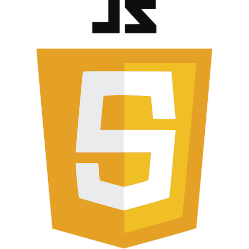
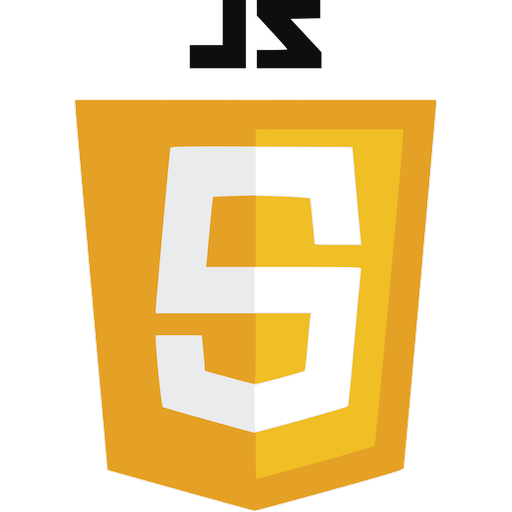

Expériences professionnelles 👨🏻💻 :
- Depuis 2021 : Alternant chez SYSTEMAIR à Tilières-sur-Avres (27) dans le service informatique en tant que développeur.
- Été 2021 : Emploi saisonnier chez SANOFI à Le Trait (76) dans le laboratoire de chimie.
- 2019 - 2021 : Membre bénévole dans une association nommée eWorld in Progress spécialisée dans l’événementiel en tant que développeur.
- 2017 : Stage d'une semaine chez SANOFI à Le Trait (76) au service informatique avec découverte des métiers liés à l’informatique.
Compétences particulières 👷🏼♂️ :
- Informatique :
- Maîtrise de la plupart des logiciels type traitement de texte, édition d’image, tableur et autre.
- Maîtrise de plusieurs langages informatiques :
- Langues :
- 🏴 Anglais : niveau intermédiaire.
- 🇪🇸 Espagnol : niveau scolaire.
Centres d'intérêts 🏃🏻♂️ :
- Sports : golf, skateboard, VTT en groupe hors club.
- Loisirs : informatique, cinéma, culture de la mode, animés/mangas.

 
